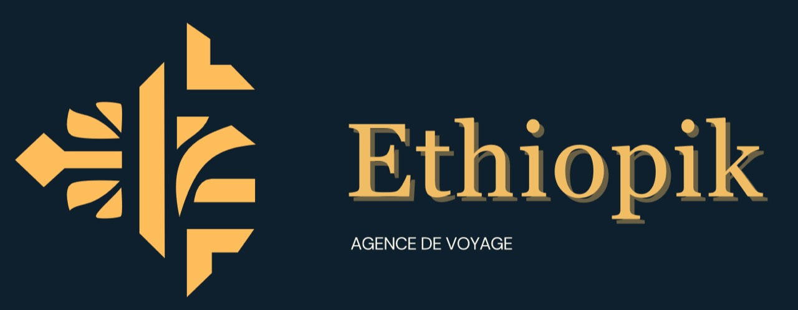

Retour aux réalisationsEthiopik Travel — Identité visuelle
Réalisation 06 / 13
Ethiopik Travel — Identité visuelle
Branding · Identité de marque
Présentation du projet
Travail autour de l’identité visuelle d’Ethiopik Travel, une agence de voyages mettant en avant la découverte de l’Éthiopie.
Cette identité accompagne la communication de l’agence sur ses différents supports commerciaux et digitaux.


AgrandirVisuel présent dans le dépôt : signature de marque. Les éléments précisément conçus par Céréna restent à confirmer avant publication.
Démarche créative
La réflexion graphique vise à construire un univers cohérent, identifiable et adapté au secteur touristique.
Les éléments visuels sont pensés pour assurer une continuité entre les différents supports de communication.